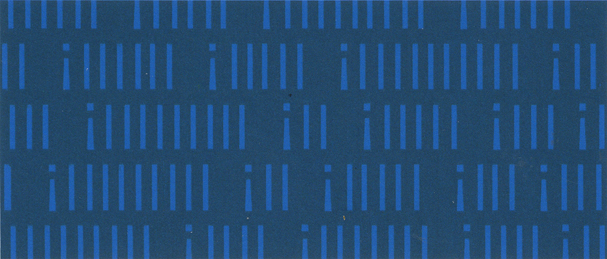
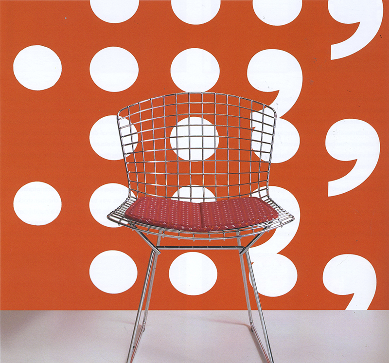

After spending years designing custom wallpapers, Knoll Textiles invited us to design a collection of vinyl wallcoverings and woven upholstery fabrics for their 2005 season.
We came up with two design collections: Chatter and Field Theory. Both collections share a similar methodology: create pattern out of simple, mundane graphic elements.The Chatter collection is composed entirely of punctuation. Pause uses commas and periods, Plus is made entirely of plus signs, and Command uses only exclamation marks to make repeating patterns. Field Theory uses one form — an extruded box — in three different scales to create diverse effects. Urban is a grand scale pattern with dynamic forms. Exurban, a long strings of the boxes with moderately varied extrusions, and Suburban a houndstooth of repetitive boxes.